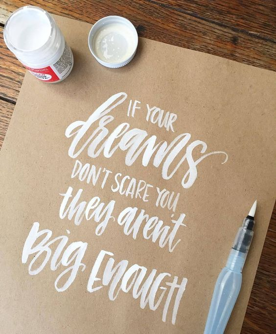

Introduction
Brush Calligraphy is a type of modern calligraphy where it is not fixed to the traditional calligraphy guidelines. Its style varies from person to person, as there are no fixed rules to it.
It is written by brush pens, using either watercolors or the brush's ink itself, not more ink dipping and messy tables 😉 And of course, you can also use your iPad if you have one!
Brush calligraphy works the same way as traditional calligraphy, where the alphabet strokes are made from different pressure/ angles of the pen.
It is easy, fun and beginner-friendly!
It is very popular these days where you can find it on greeting cards, packagings, Pinterest, everywhere!
Tools
To start with brush calligraphy, all you need is a piece of paper and a brush pen (which is available in many colours!) and lots of practice. If you're wondering where you can get brush pens, go check out your local stationary shop or simply search on your favourite online shopping app 😉
Here are some brush pen recommendations:
And if you want to create your own color, or simply want unlimited inks, try using watercolor brushes!
*Tips: you have to control your strength when using these! It may be a little frustrating at first, but beleive me, you'll be fine after some practices
Tutorials
Now after you got all the supplies needed, its time to get writing!
The basics of brush calligraphy is the same as traditional calligraphies, but there are still some things to watch out.
From the way of holding the pens, until the angle you write the alphabets, it all affects the final result.
Here are some videos that I find usefull for beginners, keep practicing and you'll get there!
1. This video talks about the basic strokes and ways to hold your pen. (the brush pen used in this video is Tombow Dual Brush Pen)
2. This video talks about how to write aplhabets in brush calligraphy, with detailed explanation on the application of basic strokes. It is a great continuation from the previous video!
3. This video demonstrates brush calligraphy with different type of brush pens!
*The last part is about Faux Calligraphy (not a type of brush calligraphy), where you can also find them in our website!
After you mastered brush calligraphy using brush pens, try using watercolor brushes! Never limit yourself towards a fixed tool 😉

---------* 💖 🖌 *----------